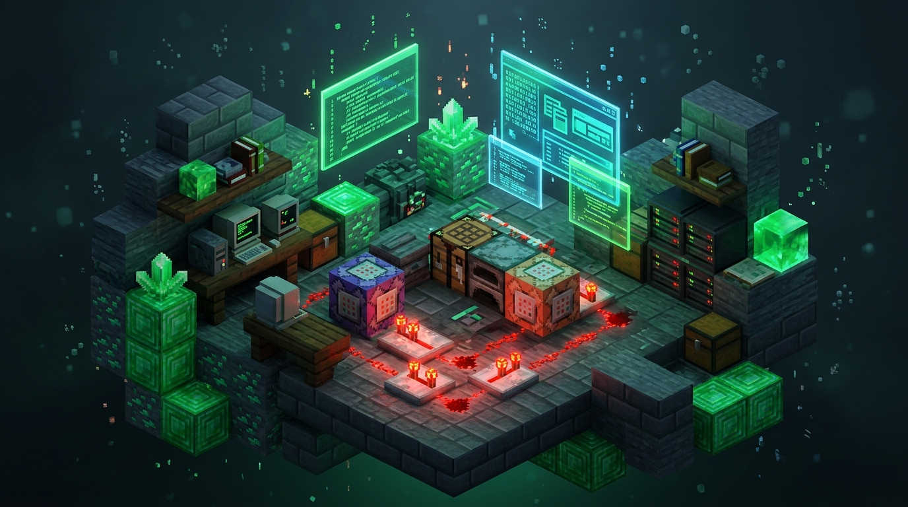

Matuto Gumawa ng Minecraft Bedrock Add-Ons
Bawat module ay nasa sariling HTML page at step-by-step lesson para hindi nakakalula basahin o i-scroll—eksaktong gaya ng W3Schools! May source code examples, live simulator, at mobile/PC workflows.

scripts/main.js)
import { world } from "@minecraft/server";
world.afterEvents.playerSpawn.subscribe((event) => {
event.player.sendMessage("§aWelcome sa Bedrock Modding, " + event.player.name + "!");
});📚 Pumili ng Course Page
Bawat card sa ibaba ay magbubukas ng dedicated HTML course page nito:
1. Beginner Guide (Mobile & PC)
ZArchiver, Code Studio, at ibisPaint X starter workflow + High-End upgrades (bridge. v2, Blockbench, Acode).
2. Folder Structures
Interactive tree explorer para sa Behavior Pack (BP) at Resource Pack (RP).
3. JSON Add-On Tutorial
Custom weapons, blocks, crafting recipes, entities, at Live JSON Validator.
4. JavaScript for MCBE
ES6 imports, variables, event listeners, at 20-tick game loops.
5. @minecraft/server API
Kumpletong reference ng world, system, Player, Entity, ItemStack, at Events.
6. @minecraft/server-ui & Sim
ActionFormData, ModalFormData, at MessageFormData na may Live In-Game UI Simulator!
🧩 Mga Add-On ni Teru Yagami
Mga totoong Bedrock add-ons na ginawa gamit ang Script API — makikita sa CurseForge (terutherabbit). Subukan ang mga ito para makita kung ano ang kayang gawin ng mga natutunan mo dito!
Team Party Reborn — Achievement Friendly
UI-driven na party management: gumawa ng teams, mag-private chat, i-disable ang friendly fire, mag-declare ng wars at duels, at mag-TPA sa teammates.
Tingnan sa CurseForge ❯ApexPearl: TPA, Lodestone Stasis & Deathback
Teleportation add-on na may Player TPA menu, Lodestone Stasis pearls na gumagana kahit magkaibang dimension, at automatic na pagbalik sa death point — lahat gamit ang sneak gestures.
Tingnan sa CurseForge ❯ApexClaimLand: Land Claim, Grief Protection & Waypoint Teleport
Land claiming at proteksyon: pumili ng area gamit ang 2-corner gesture, i-set ang grief/explosion/PvP rules, mag-invite ng trusted players, at mag-teleport sa claim o kama kahit magkaibang dimension.
Tingnan sa CurseForge ❯